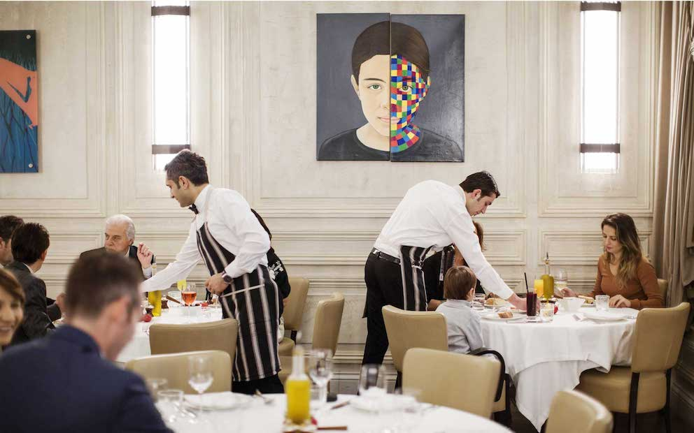
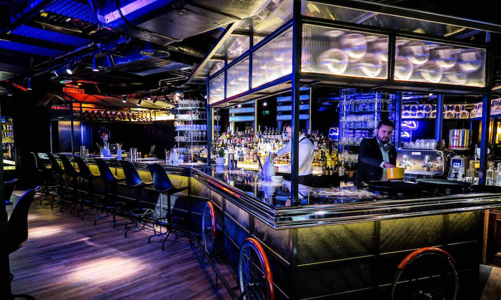

Min K. Y.
Aspiring Restaurateur, exploring the world one bite at a time.
"The world is your oyster", they said. Looking back, I realized how right they were. I love oysters, and there are many amazing oysters around the world to try. So I'm on a hunt for the best oyster bars, and also the best izakayas and pinxo bars. Life is too short, and I'm on my journey to explore the world - one bite at a time. And one day, I hope to open up my own restaurant with a curation of all the best tastes and memories I have collected.
Here are some of my favourite restaurants
|  |
La Petite MaisonLa Petite Maison is one of my favourite french restaurants. I first discovered the restaurant while I was in Dubai but you can also find them in London, Istanbul, and Hong Kong. They have the best burrata salad and and prepare their sauces fresh every morning. |
 |
Burnt EndsBurnt Ends offers the best steaks and vibe in Singapore. Given its tiny space, you'll need to reserve weeks in advance, but it's all worth the wait. |
|  |
StreetXOStreetXO is the casual spin off of the 3 Michelin Star DiverXO in Madrid. You can find the best cocktails and tapas, and enjoy it on the rooftop overlooking the Madrid skyline. |